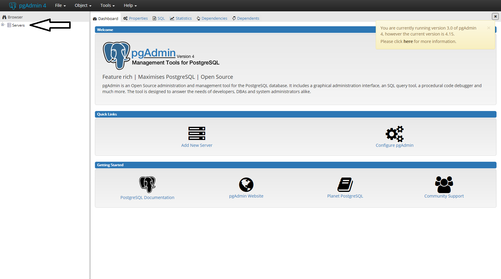
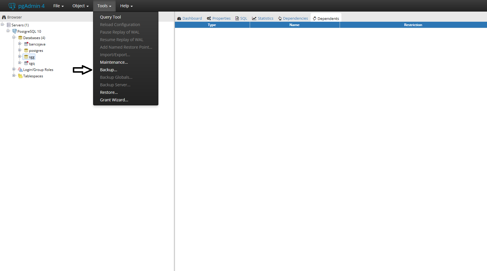

Caso ja esteja logado, pure até a etapa 5.
1- Executar o aplicativo PgAdmin 4.
2- Ao executar, clique no + do Servers.

3- Clique no + do PostgresSQL 10.
4- Informe a senha criada na hora de instalar o Postgres. Neste caso informar: postgres123
Caso queira pode deixar checado a opção Save Password para deixar a senha salvo.
5- Clique com o botão direito do mouse sobre o sgg e seleciona a opção Backup... .
Ou
5- Clique em Tools e clique na opção backup.
6- Clique no botão do File ... conforme a imagem acima.
7- Selecione o local para salvar, dê o nome para o arquivo, troque o Format: para backup e clique no Create.
8- Após ter clicado no crate, clique no botão Backup.
Observação: Pode levar um tempo.
9- Após ter clicado no Backup, se aparecer uma mensagem "Backup job created" no canto inferior direito, o Backup foi gerado com sucesso.